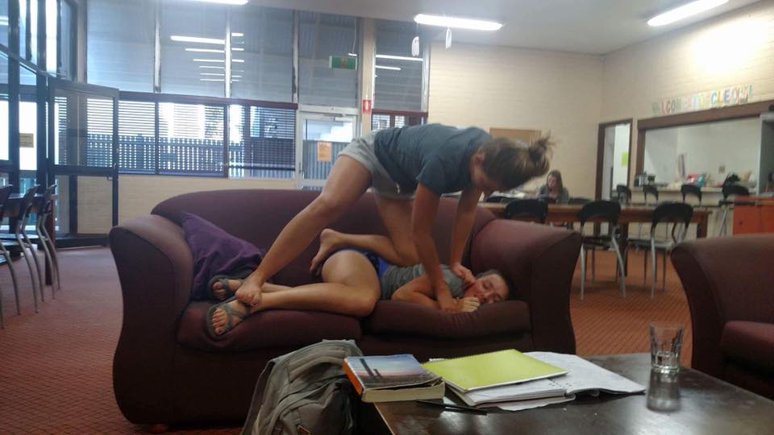

Amber Coburn is 21 years old. She owns a restaurant with her twin sis, Cass, called The Jawbone. She is great at graphic design, but can't do laundry to save her life. Amber is currently in the Anthrozoology program at Carroll College.
Amber has adopted the cutest dog named Akeela! When Amber and Cassie fight, Cassie always wins. Although, Amber never lets her forget she is 2 minutes older.